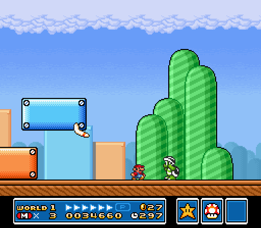
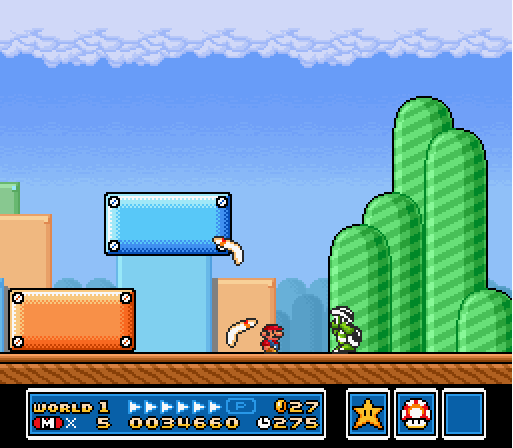
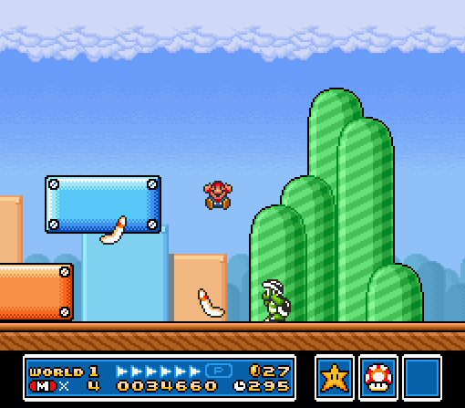
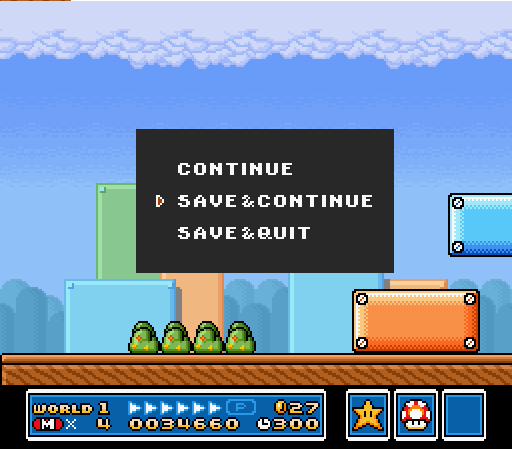
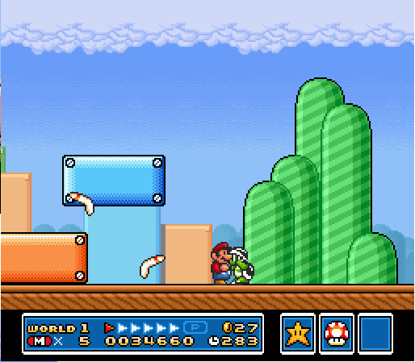

Agenda
- What's in this class?
- Your end of the bargain
- The Command Line
- Git/Github
What's in this class?
We'll be covering...
- Command Line / Terminal
- Git and Github
- Ruby language
- Rails Web Framework
Back-end vs Front-end
Web Development -> apps built for the web
Front-End Development -> client / browser code (HTML, CSS, JS)
Back-End Development -> server-side code (Ruby, C#, Python...)
What I need from you
Passing
- Complete 80% of all assigned homework
- Complete a final project
Homework
Bigger homework assignments due on Mondays
Activities
- Code Alongs
- Exercises
- Labs
- Blog
Keep in touch
@_StevenNunez
steven.nunez@gmail.com
Use Lore
Ask questions in tlk.io
Ask for videos on Trello
Go to Office hours!
Feedback
- In person
- By email
- Let me know if you think we suck
wtf-o-meter
Pace
Should be tough.
Which brings me to a very important point
Learning as an adult
Try to understand 70-80% of what I'm saying
Don't be afraid to look dumb
Join the Community
Join meetup groups
- FullStack GA NYC Ruby on Rails
- nyc.rb
- NYC on Rails
- Ruby Blind
- Code Crew
- Hacker Hours
- Unearth Ruby
Let's get started
Go over command line practices we'll use in class
Learn Git and Github
Set up a blog
Go home
Terminal
Opening the terminal
On OSX hit command + space and type terminal
On Ubuntu open the launcher and type terminal
What are we typing
Small programs that usually do one thing, and do it well
Commands to know
touch
# Touch is used to update the modified time of a file.
# If the file doesn't exist, it will create an empty file
touch main.rb
ls
ls # shows all files in a folder
ls -l # shows it in long form
ls -al # shows all files including hidden files (start with a .)
echo
echo "I am the one who knocks" # echo what you wrote back to you.
echo "Something really insightful" >> my_notes
cat
cat my_notes #shows contents of file for reading
mv
# mv source destination
# Used for moving files, but also for renaming
touch settings
mv settings settings.old
cp
# cp source destination
# Used for copying files and folders
mkdir pictures
# copies pictures folder and its files to the desktop
cp -R pictures ~/Desktop/pictures
rm
# rm file
# rm -r folder
# Used for moving files, but also for renaming
touch incriminating_evidence
mkdir pictures
rm incriminating_evidence
rm -r pictures
tail
tail my_notes
tail -f my_notes
# open another tab, go to the same folder and type:
echo "More notes" >> my_notes
---
grep
grep More my_notes # searches for the word More in my_notes
pipes '|'
grep More my_notes
cat my_notes | grep More # does the same thing
Git
Git vs Github
Git is the program you use to track your files, and commit changes.
Github is Facebook for nerds
Another day
Something's off...
This happens
Checkpoints
Be Bold
Stupid things

Overview
- Git Workflow
- Doing stupid things - When disaster strikes
Git Workflow
Git! Watch this folder
git init
Git! Track these files!
git add . # adds all files in the current directory to be "Tracked"
Code along
- Create a folder called Final_Project.
- Change into it
- Create 2 files: proposal.md, model_diagram.md
- Tell git to watch this folder
- Tell git to track the 2 files
Solution
mkdir Final_Project
cd Final_Project
touch proposal.md
touch model_diagram.md
git init
git add proposal.md model_diagram.md
Git! Freeze!
Note what my files look like right now
Code along - Commiting
Commit the tracked files with the message of 'Initial Commit'
Solution
git commit -m "Initial Commit"
Code along
- Open proposal.md in sublime text
- Type ‘For my final project, I want to…’
- (Bonus if you can do this without opening sublime)
- Check the status of the file
- Look at the difference in the file
- Tell git it’s ok to commit this file
- Commit the file
Solution
echo "For my final project, I want to…" >> proposal.md
git status
git diff
git add .
git commit -m "Start working on proposal"
Terminology
- Repository - A folder managed by git
- Untracked file - A file git is not monitoring. DANGER
- Tracked file - A file git is monitoring for changes
- Unstaged file - A tracked file that will not be included in the next commit
- Staged file - A tracked file that will be included in the next commit
- Commit - A snapshot of all staged files at the time of execution
Code along - Stupidity
- Delete proposal.md
- Confirm it’s deleted
- Bring it back from the dead
- Celebrate you still have your code
Solution
rm proposal.md
ls proposal.md
git checkout proposal.md
echo "WIN!"
They say git gets easier once you get the basic idea that branches are homeomorphic endofunctors mapping submanifolds of a Hilbert space. — Kornel (@pornelski) March 25, 2013
Blogging with Git
Octopress
A blogging framework for hackers.
http://octopress.org/
Setting it up
Trust me...
cd code # where you keep your code
git clone git://github.com/imathis/octopress.git octopress
cd octopress
bundle install
bundle exec rake install
Setting up Github
Create a repository on github named: username.github.io
username is YOUR USERNAME
Then back in your terminal...
rake setup_github_pages
rake generate
rake deploy
Go to username.github.io
You should see... something
Create a new blog
Stop trusting me now
rake new_post["Man git is easy"]
Writing
Edit the markdown file
When you're done commit the changed files!
Put it on the internet!
rake generate
rake deploy
echo "WOOT!"
Homework
Make a new PAGE on octopress and create an about page
Due Wednesday